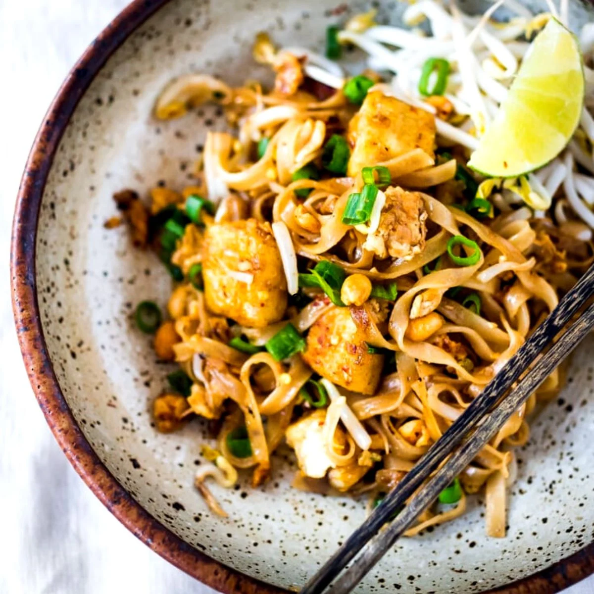

How to make Pad Thai

Description
This pad thai dish can be prepared in as little as 30 minutes, with only a few key ingredients to make this dish really pop on your dinner table. You will definitely need shrimps, peanuts, and bean sprouts.
Also make sure to have tamarind sauce to mix it all in together. The resulting dish will taste as delicious as it looks!
Ingredients
- Shrimp
- Bean sprouts
- Tamarind sauce
- Flat noodles
- Peanuts
Steps
- Prepare flat noodles by washing and letting it sit in water for 30 minutes
- Cut shrimp
- Crush peanuts
- Heat up wok for 5 minutes
- Throw in flat noodles and stirfry for 3 minutes
- Throw everything else in
- Place beansprouts and crushed peanuts on top after its plated